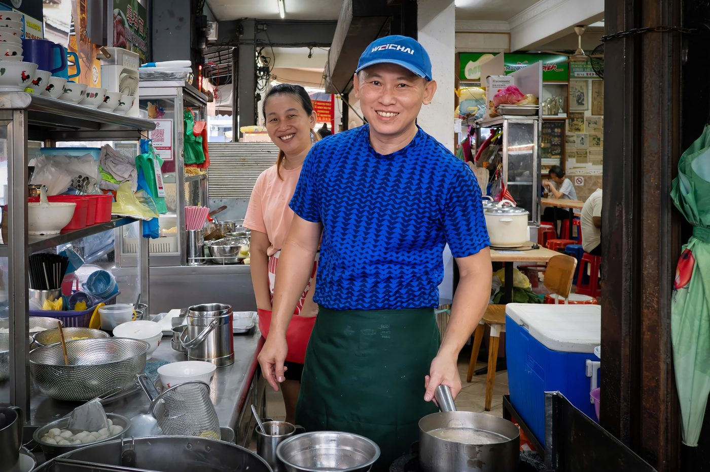
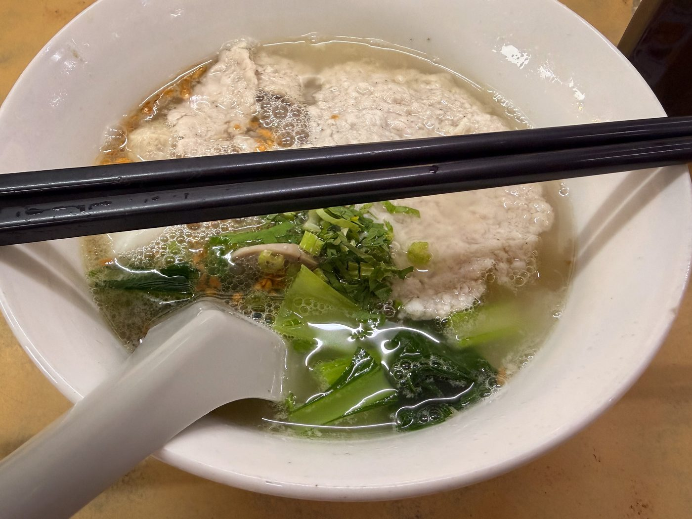

Field guide

Field note · Pulau Tikus · 29 Jul 2026
Instant Cook Koay Teow at Sin Hup Aun Cafe
Rainy Pulau Tikus morning — clear Instant Cook Koay Teow Th’ng across from coworking, fried garlic and tiny fierce chillies.
It’s a bit rainy and gloomy this morning, so I’m looking for something bright and cheerful. Exploring the hawker stalls across the street, “Instant Cook Koay Teow” sounds like it. As I sit down and wait for my soup to arrive, I consult with my AI research assistant, C-Mee-PO, to tell me about this dish.
C-Mee-PO briefs the bowl
C-Mee-PO: Koay Teow Soup (粿條湯 / Koay Teow Th’ng) is Penang’s everyday comfort bowl — silky flat rice noodles in a clean, savoury clear broth that locals happily eat from breakfast right through to late supper.
What it is
A classic soup-style noodle dish built on a light yet deeply flavoured chicken or pork bone broth (sometimes enriched with dried flounder or old hen). The defining character is the delicate, non-greasy clarity of the soup paired with soft, wide rice noodles that slip easily off the chopsticks.
Typical ingredients & toppings
- Noodles — thin or medium-width fresh koay teow (flat rice noodles)
- Broth — clear chicken / pork broth
- Proteins — sliced chicken or lean pork, fish balls; sometimes pork liver or minced pork
- Vegetables — bean sprouts, occasional leafy greens
- Signature garnish — golden crispy fried garlic + garlic oil, chopped spring onion, fried shallots
- Optional “special” upgrades — duck meat, braised chicken feet, extra innards, or a side of sambal
Penang style vs elsewhere
Penang versions stay deliberately light and aromatic, relying on long-simmered bones and a heavy hand of fried garlic rather than heavy spices or dark sauces. Some stalls (notably Super Star on Kimberley Street) also offer a “black soup” variant where braising liquid is mixed into the clear broth for a murkier, richer bowl.
C-Mee-PO: Wow — that soup arrived quickly! The cart is called Instant Cook because the pre-cooked, soft noodles finish in a matter of seconds, and so does that super-thin slice of pork. How does it taste?
It’s clear, refreshing, and reinvigorating. The green chillies on the side might look tiny, but they are strong — there’s a real kick. The thin slice of pork just melts away. A light, clear, delightful experience overall.
Photos


C-Mee-PO: Bright enough to outshine the rain. I’d eat that if I had a mouth!